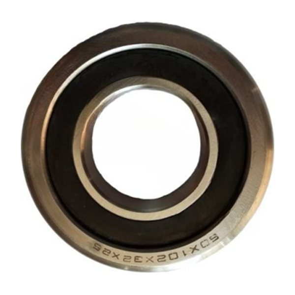

Parts › Mast & Upright › 27739-4025010232-25

Available
Email for a quote
Nichiyu 27739-4025010232-25 Mast Roller
| OEM part number | 27739-4025010232-25 |
| Fits | Nichiyu |
| Models / notes | FBR15/18-75S |
| Category | Mast & Upright |
| Type | Aftermarket replacement |
Send us the quantity you need and we'll reply with pricing, usually within 24 hours. Not the exact part? We can source it. Send the part number or a photo.